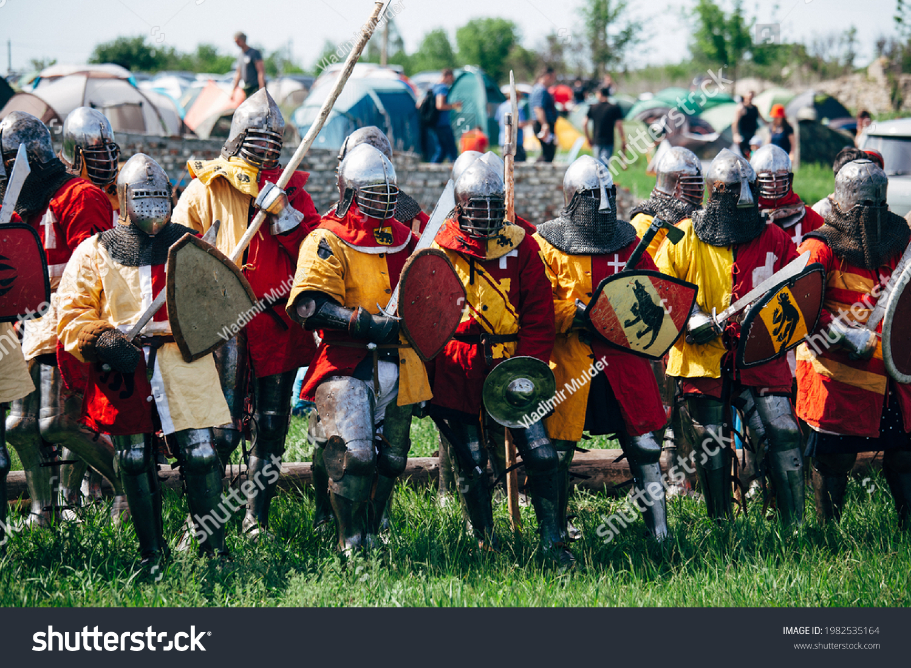

what is Buhurt?
Historical Medieval Battles (HMB) or Buhurt or Armored Combat is a modern full contact fighting sport where fighters wear historically accurate medieval armour and use blunted weapons made of steel. The word Buhurt comes from the Old French word béhourd which means "joust" or "tournament. Equipment has to follow regulations on historical authenticity and safety. these rules are published on the official Battle of the Nations website. The protective armour covers the fighters full body. It is usually crafted from steel or other permitted alloys and is aesthetically as close to their historical counterparts as possible. This separates Buhurt from Historical European Martial Arts (HEMA) which in contrast, uses modern protective equipment such as a modern fencing helmet, padded fencing jacket, modern padded/heavy duty fencing gloves, forearm and leg protection. Contestants may aim blows and hits at any parts of the body that are in line with the regulations. Grappling and percussive techniques are permitted, thrusts are forbidden. Unlike staged battles, that can be seen at festivals of historical reenactment of the Middle Ages the competitions in buhurt are full contact sporting events without coreography. Fights are refereed by the referees called knight marshals who have special training and combat experience.
The History of Buhurt
During the Middle-Ages skilled knights travelled from tournament to tournament to make a small fortune. Often times a knight would find a lord to permanently conscript him and thereby securing his future. In modern times in the late 1990s and the beginning of the 21st century when most Eastern European countries reenactors used wooden or textolite weapons, Russia, Belarus and Ukraine began to hold large-scale historical medieval battles using steel arms. An example is the festival "Zhelezny Grad" (Iron Town) held in Izborsk, where buhurts involving hundreds of fighters took place or Sword of Russia tournament from 1996. The first European Championship took place in Ukraine in 2005, with nominations "Sword and Shield", and "Sword vs Sword". The first held Battle of the Nations in Khotyn Fortress in Ukraine where participants from Ukraine, Poland, Belarus and Russia competed under unified rules and regulations started the expansion of the sport. This event attracted participants from the rest of Europe and outside of it and buhurt gained worldwide attention from reenactment community. Battle of the Nations is held every other year at a new fortress or castle.
Find out more about Buhurt on Wikipedia